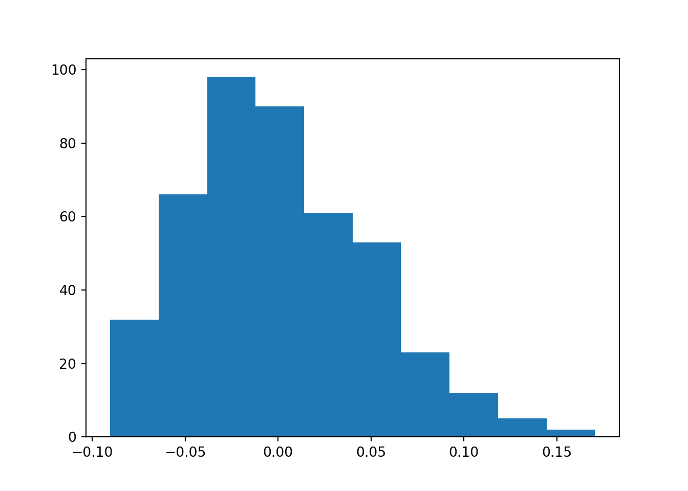
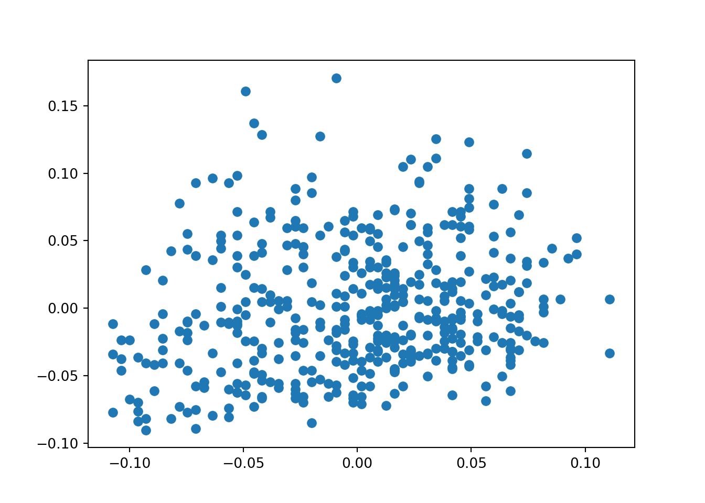
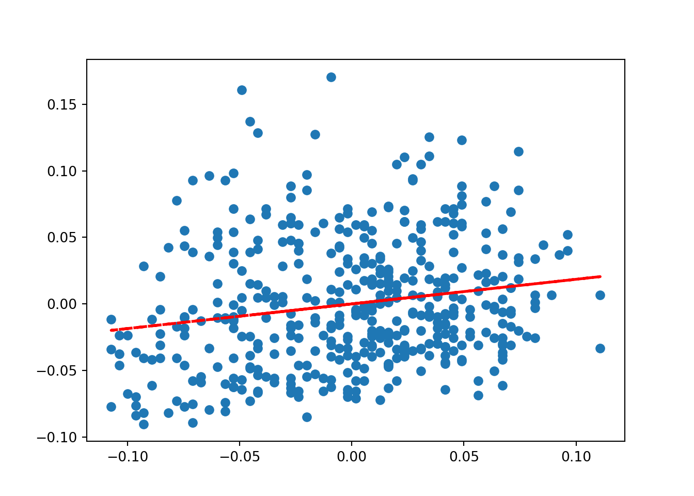

# Now, we can load the libraries
import numpy as np # can be used to perform a wide variety of mathematical operations on arrays.
import pandas as pd # mainly used for data analysis and associated manipulation of tabular data in DataFrames
import matplotlib as mpl # comprehensive library for creating static, animated, and interactive visualizations in Python
import sklearn as sk # implement machine learning models and statistical modelling.An introduction to Python programming
If you would like to follow the course with Python, we will offer some guidance. Bear in mind that the R and Python scripts are not meant to be exact replicas of one another, this is because the languages offer different data wrangling packages. However, you’ll be able to get to the core of the course content.
With that said, let’s start with the first difference. Python does not have a standard IDE like Rstudio for R. You can choose to work directly with the console REPL, with Jupyter notebooks or the IDE Visual Studio Code. We recommend to use VSCode, because it offers many functionalities for code-sharing and collaboration, and you can integrate AI-helpers to guide you throughout your coding tasks.
Download VSCode and let’s get started!
When you open the IDE VSCode, you’ll receive a prompt to start a new project. Please make sure that when you do, you automatically save it in a dedicated folder. This will be relevant for many reasons, but the most pressing one is that you’ll want to create a Virtual Environment before starting your script.
A Python Virtual Environment, also referred to as venv(s), is there to help us decouple and isolate package installs and manage them, independently from pkgs that are provided by the system or used by other projects. Although not strictly necessary, it is a good practice that will save us a few headaches in the future.
To create a virtual environment, once you’ve opened a new blank project in VSC, click on shift + cmd + P (or F1) to open the Command Palette (it should display from the top of VSC). Type “Python” and select create python terminal. In the terminal, type `` python -m venv venv ’’ and that’s it! You’ll notice the appearance of a venv folder in your dedicated project folder.
Now, you’ll need to install and load the libraries you’ll need for your project. To install them, use the python terminal you have opened. It should be displayed in the bottom of the working environment. Use the following (which should work with both Windows and Macbook, although Mac users can also use the general brew installer):
pip install pkg_name
With some basic libraries open, let’s start with a brief introduction to Python programming. Like R, it is object oriented programming. But we call its elements differently. Python uses the following list of elements:
- literals, variables, operators, delimiters, keywords, comments
# Assigning VARIABLES with LITERALS
an_integer = 4 # integer
a_float = 4.5 # numeric/float
a_boolean = False # boolean, true or false
a_string = "Number of literals:"
print(a_string , an_integer)Number of literals: 4You’ll notice that what we call an object in R, is a variable in Python. Likewise, an element in R is now a literal in Python. We’ll stop with the comparisons and proceed to work with Python language for now.
In Python, the data type is derived from the literal and does not have to be described explicitly.
You can overwrite a variable (i.e. an object) with new information.
e.g.
an_integer = 7
print(an_integer)7x = np.linspace(-2,2,41)
print(x)[-2. -1.9 -1.8 -1.7 -1.6 -1.5 -1.4 -1.3 -1.2 -1.1 -1. -0.9 -0.8 -0.7
-0.6 -0.5 -0.4 -0.3 -0.2 -0.1 0. 0.1 0.2 0.3 0.4 0.5 0.6 0.7
0.8 0.9 1. 1.1 1.2 1.3 1.4 1.5 1.6 1.7 1.8 1.9 2. ]If you’re working with a VSC script, you’ll want to select a snippet of the script and use shift + enter to only run that snippet (and not the whole code chunk).
Some basics:
Arithmetic operators
5 + 1 65*3 156 == 100 # returns FALSEFalse6 != 100 # returns TRUETrue20 / 210.02 ** 3 # 2 to the power of 3, ** is used for exponentiation8Keywords and comments
a_var = "This is a variable, which contains a string."
#and this is a comment about the string variable
print(a_var)
# lists: they are ordered arrays of elements, accesible via an index, e.g.
many_strings = ["Tolkien", "Orwell", "Austen"]
many_strings[0] # returns first element of list
# note that python starts counting from zero
many_strings.append("Mephistopheles")
print(many_strings) # we have succesfully appended an element to our list
many_strings.insert(2,"Shrek") # Insert element Shrek in position 3 of list (0,1,2)
print(many_strings)
# finally, sort the list...
many_strings.sort()
print(many_strings)
# python orders alphabetically :) Let’s use a toy dataset from the sklearn package to practice some basic estimations.
# import sklearn dataset
from sklearn.datasets import load_diabetes
# load the dataset, assign it to an object
diabetes = load_diabetes()
print(diabetes.DESCR) # DESCR is a description option from sklearn library. Be mindful of the Note!.. _diabetes_dataset:
Diabetes dataset
----------------
Ten baseline variables, age, sex, body mass index, average blood
pressure, and six blood serum measurements were obtained for each of n =
442 diabetes patients, as well as the response of interest, a
quantitative measure of disease progression one year after baseline.
**Data Set Characteristics:**
:Number of Instances: 442
:Number of Attributes: First 10 columns are numeric predictive values
:Target: Column 11 is a quantitative measure of disease progression one year after baseline
:Attribute Information:
- age age in years
- sex
- bmi body mass index
- bp average blood pressure
- s1 tc, total serum cholesterol
- s2 ldl, low-density lipoproteins
- s3 hdl, high-density lipoproteins
- s4 tch, total cholesterol / HDL
- s5 ltg, possibly log of serum triglycerides level
- s6 glu, blood sugar level
Note: Each of these 10 feature variables have been mean centered and scaled by the standard deviation times the square root of `n_samples` (i.e. the sum of squares of each column totals 1).
Source URL:
https://www4.stat.ncsu.edu/~boos/var.select/diabetes.html
For more information see:
Bradley Efron, Trevor Hastie, Iain Johnstone and Robert Tibshirani (2004) "Least Angle Regression," Annals of Statistics (with discussion), 407-499.
(https://web.stanford.edu/~hastie/Papers/LARS/LeastAngle_2002.pdf)Whilst there are many things you can do directly with the sklearn package options, the pandas library is the best for dataframe manipulation.
# 1. convert the dataframe object into a pandas dataframe object
pandas_diabetes = pd.DataFrame(diabetes.data, columns=diabetes.feature_names)
# now we can use the handy describe() and info() options from pandas
pandas_diabetes.describe() # returns descriptive statistics of variables in dataframe (df) age sex ... s5 s6
count 4.420000e+02 4.420000e+02 ... 4.420000e+02 4.420000e+02
mean -2.511817e-19 1.230790e-17 ... 9.293722e-17 1.130318e-17
std 4.761905e-02 4.761905e-02 ... 4.761905e-02 4.761905e-02
min -1.072256e-01 -4.464164e-02 ... -1.260971e-01 -1.377672e-01
25% -3.729927e-02 -4.464164e-02 ... -3.324559e-02 -3.317903e-02
50% 5.383060e-03 -4.464164e-02 ... -1.947171e-03 -1.077698e-03
75% 3.807591e-02 5.068012e-02 ... 3.243232e-02 2.791705e-02
max 1.107267e-01 5.068012e-02 ... 1.335973e-01 1.356118e-01
[8 rows x 10 columns]pandas_diabetes.info() # returns basic information about observations and variable names/types<class 'pandas.core.frame.DataFrame'>
RangeIndex: 442 entries, 0 to 441
Data columns (total 10 columns):
# Column Non-Null Count Dtype
--- ------ -------------- -----
0 age 442 non-null float64
1 sex 442 non-null float64
2 bmi 442 non-null float64
3 bp 442 non-null float64
4 s1 442 non-null float64
5 s2 442 non-null float64
6 s3 442 non-null float64
7 s4 442 non-null float64
8 s5 442 non-null float64
9 s6 442 non-null float64
dtypes: float64(10)
memory usage: 34.7 KBlen(pandas_diabetes) # returns the length of the object (aka the number of observations in df)442pandas_diabetes.head() # print the first 4 observations of the variables (glimpse of your df) age sex bmi ... s4 s5 s6
0 0.038076 0.050680 0.061696 ... -0.002592 0.019907 -0.017646
1 -0.001882 -0.044642 -0.051474 ... -0.039493 -0.068332 -0.092204
2 0.085299 0.050680 0.044451 ... -0.002592 0.002861 -0.025930
3 -0.089063 -0.044642 -0.011595 ... 0.034309 0.022688 -0.009362
4 0.005383 -0.044642 -0.036385 ... -0.002592 -0.031988 -0.046641
[5 rows x 10 columns]If you’re working with VSC and you’d like to get a nice display of your data:
install the pkg ‘tabulate’ (pip install tabulate) using the terminal. You may have to open a new bash terminal (that is not using the Python REPL) to install packages. If that is the case (i.e. you could not pip install in the terminal you are using), you can ‘split’ the terminal using the interface split prompt.
# this prints the dataframe nicely (but remember to only print the head/first observations, otherwise you display a large table!)
print(pandas_diabetes.head().to_markdown())| | age | sex | bmi | bp | s1 | s2 | s3 | s4 | s5 | s6 |
|---:|------------:|-----------:|-----------:|------------:|------------:|-----------:|------------:|------------:|------------:|------------:|
| 0 | 0.0380759 | 0.0506801 | 0.0616962 | 0.0218724 | -0.0442235 | -0.0348208 | -0.0434008 | -0.00259226 | 0.0199075 | -0.0176461 |
| 1 | -0.00188202 | -0.0446416 | -0.0514741 | -0.0263275 | -0.00844872 | -0.0191633 | 0.0744116 | -0.0394934 | -0.0683315 | -0.092204 |
| 2 | 0.0852989 | 0.0506801 | 0.0444512 | -0.00567042 | -0.0455995 | -0.0341945 | -0.0323559 | -0.00259226 | 0.00286131 | -0.0259303 |
| 3 | -0.0890629 | -0.0446416 | -0.011595 | -0.0366561 | 0.0121906 | 0.0249906 | -0.0360376 | 0.0343089 | 0.0226877 | -0.00936191 |
| 4 | 0.00538306 | -0.0446416 | -0.0363847 | 0.0218724 | 0.00393485 | 0.0155961 | 0.00814208 | -0.00259226 | -0.0319876 | -0.0466409 |Some basic operations and estimation of a linear model:
Indexig with pandas is done using the .iloc[] call. To estimate a linear model (OLS), you’ll need to split your data into a dependent Y and independent X variables.
Luckily for us, because the diabetes toy dataframe is from the sklearn library, you can use the target and data functions. For the same reason, we will use the diabetes dataset and not the pandas-converted dataset.
pandas_diabetes.iloc[:,1] # print first column: Name: sex, Length: 442, dtype: float640 0.050680
1 -0.044642
2 0.050680
3 -0.044642
4 -0.044642
...
437 0.050680
438 0.050680
439 0.050680
440 -0.044642
441 -0.044642
Name: sex, Length: 442, dtype: float64pandas_diabetes.iloc[:,1].mean() # get the mean of the first column: 1.2307902309192911e-17np.float64(1.2307902309192911e-17)# Linear Model (OLS), split data into dep Y and indep X variables
Y = diabetes.target # define targer/ Y var
X = diabetes.data # all remaining variables in the dataset are now X covariates
print(Y.shape, X.shape) # y is one column with 442 observations, X is 10 columns with 442 observations(442,) (442, 10)print(Y) # prints all the vaues of Y[151. 75. 141. 206. 135. 97. 138. 63. 110. 310. 101. 69. 179. 185.
118. 171. 166. 144. 97. 168. 68. 49. 68. 245. 184. 202. 137. 85.
131. 283. 129. 59. 341. 87. 65. 102. 265. 276. 252. 90. 100. 55.
61. 92. 259. 53. 190. 142. 75. 142. 155. 225. 59. 104. 182. 128.
52. 37. 170. 170. 61. 144. 52. 128. 71. 163. 150. 97. 160. 178.
48. 270. 202. 111. 85. 42. 170. 200. 252. 113. 143. 51. 52. 210.
65. 141. 55. 134. 42. 111. 98. 164. 48. 96. 90. 162. 150. 279.
92. 83. 128. 102. 302. 198. 95. 53. 134. 144. 232. 81. 104. 59.
246. 297. 258. 229. 275. 281. 179. 200. 200. 173. 180. 84. 121. 161.
99. 109. 115. 268. 274. 158. 107. 83. 103. 272. 85. 280. 336. 281.
118. 317. 235. 60. 174. 259. 178. 128. 96. 126. 288. 88. 292. 71.
197. 186. 25. 84. 96. 195. 53. 217. 172. 131. 214. 59. 70. 220.
268. 152. 47. 74. 295. 101. 151. 127. 237. 225. 81. 151. 107. 64.
138. 185. 265. 101. 137. 143. 141. 79. 292. 178. 91. 116. 86. 122.
72. 129. 142. 90. 158. 39. 196. 222. 277. 99. 196. 202. 155. 77.
191. 70. 73. 49. 65. 263. 248. 296. 214. 185. 78. 93. 252. 150.
77. 208. 77. 108. 160. 53. 220. 154. 259. 90. 246. 124. 67. 72.
257. 262. 275. 177. 71. 47. 187. 125. 78. 51. 258. 215. 303. 243.
91. 150. 310. 153. 346. 63. 89. 50. 39. 103. 308. 116. 145. 74.
45. 115. 264. 87. 202. 127. 182. 241. 66. 94. 283. 64. 102. 200.
265. 94. 230. 181. 156. 233. 60. 219. 80. 68. 332. 248. 84. 200.
55. 85. 89. 31. 129. 83. 275. 65. 198. 236. 253. 124. 44. 172.
114. 142. 109. 180. 144. 163. 147. 97. 220. 190. 109. 191. 122. 230.
242. 248. 249. 192. 131. 237. 78. 135. 244. 199. 270. 164. 72. 96.
306. 91. 214. 95. 216. 263. 178. 113. 200. 139. 139. 88. 148. 88.
243. 71. 77. 109. 272. 60. 54. 221. 90. 311. 281. 182. 321. 58.
262. 206. 233. 242. 123. 167. 63. 197. 71. 168. 140. 217. 121. 235.
245. 40. 52. 104. 132. 88. 69. 219. 72. 201. 110. 51. 277. 63.
118. 69. 273. 258. 43. 198. 242. 232. 175. 93. 168. 275. 293. 281.
72. 140. 189. 181. 209. 136. 261. 113. 131. 174. 257. 55. 84. 42.
146. 212. 233. 91. 111. 152. 120. 67. 310. 94. 183. 66. 173. 72.
49. 64. 48. 178. 104. 132. 220. 57.]To estimate a linear model, we’ll need t load the function from the sklearn library.
from sklearn.linear_model import LinearRegression
lm = LinearRegression(fit_intercept=True).fit(X, Y)
#print model coefficients using pandas
print(lm.coef_) # displayed in the order of the column names[ -10.0098663 -239.81564367 519.84592005 324.3846455 -792.17563855
476.73902101 101.04326794 177.06323767 751.27369956 67.62669218]print(lm.intercept_) # model intercept = 152.133152.13348416289597# in a nicer way
column_names = pandas_diabetes.columns # to retrieve column names we should use the pandas dataset
coefficients = pd.concat([pd.DataFrame(column_names),pd.DataFrame(np.transpose(lm.coef_))], axis = 1)
print(coefficients) # displays variable name and it's estimated coefficient. 0 0
0 age -10.009866
1 sex -239.815644
2 bmi 519.845920
3 bp 324.384646
4 s1 -792.175639
5 s2 476.739021
6 s3 101.043268
7 s4 177.063238
8 s5 751.273700
9 s6 67.626692The sklearn library will be our trusted Machine Learning ally. However, for general statistical analysis and easier to interpret output, there are other libraries. E.g.
# an ever more intuitive output would look like this ->
# remember to pip install the libraries before importing them! And to do so in a different terminal (open a new bash terminal)
import statsmodels.api as sm
from scipy import stats
constant = sm.add_constant(X) # create a new X (covariate) object that includes all our variables and allow for this object to also display an estimated constant
est = sm.OLS(Y, constant) # estimate a linear regression model with dep Y and indep Xs (now constant)
lm_2 = est.fit() # create an object that contains all the models' parameters
print(lm_2.summary()) # print linear model parameters OLS Regression Results
==============================================================================
Dep. Variable: y R-squared: 0.518
Model: OLS Adj. R-squared: 0.507
Method: Least Squares F-statistic: 46.27
Date: Fri, 28 Mar 2025 Prob (F-statistic): 3.83e-62
Time: 13:36:42 Log-Likelihood: -2386.0
No. Observations: 442 AIC: 4794.
Df Residuals: 431 BIC: 4839.
Df Model: 10
Covariance Type: nonrobust
==============================================================================
coef std err t P>|t| [0.025 0.975]
------------------------------------------------------------------------------
const 152.1335 2.576 59.061 0.000 147.071 157.196
x1 -10.0099 59.749 -0.168 0.867 -127.446 107.426
x2 -239.8156 61.222 -3.917 0.000 -360.147 -119.484
x3 519.8459 66.533 7.813 0.000 389.076 650.616
x4 324.3846 65.422 4.958 0.000 195.799 452.970
x5 -792.1756 416.680 -1.901 0.058 -1611.153 26.802
x6 476.7390 339.030 1.406 0.160 -189.620 1143.098
x7 101.0433 212.531 0.475 0.635 -316.684 518.770
x8 177.0632 161.476 1.097 0.273 -140.315 494.441
x9 751.2737 171.900 4.370 0.000 413.407 1089.140
x10 67.6267 65.984 1.025 0.306 -62.064 197.318
==============================================================================
Omnibus: 1.506 Durbin-Watson: 2.029
Prob(Omnibus): 0.471 Jarque-Bera (JB): 1.404
Skew: 0.017 Prob(JB): 0.496
Kurtosis: 2.726 Cond. No. 227.
==============================================================================
Notes:
[1] Standard Errors assume that the covariance matrix of the errors is correctly specified.This displayed output contains all the information we may need to interpret the suitability of our linear model.
We’re at the end of this brief intro to Python. Notice that there’s a forward structure throughout. We create an object X, which we define to be of class, say, pandas. It’s class will let us use that class/library’s functions by calling them after a dot: X.summary() will display a summary of the X object. ** Visualisation with matplotlib **
import matplotlib.pyplot as plt
pandas_diabetes.head() # to remember our variables age sex bmi ... s4 s5 s6
0 0.038076 0.050680 0.061696 ... -0.002592 0.019907 -0.017646
1 -0.001882 -0.044642 -0.051474 ... -0.039493 -0.068332 -0.092204
2 0.085299 0.050680 0.044451 ... -0.002592 0.002861 -0.025930
3 -0.089063 -0.044642 -0.011595 ... 0.034309 0.022688 -0.009362
4 0.005383 -0.044642 -0.036385 ... -0.002592 -0.031988 -0.046641
[5 rows x 10 columns]bmi = pandas_diabetes.iloc[:,2] # select and store bmi variable
age = pandas_diabetes.iloc[:,0] # select and store age variable
plt.hist(bmi)
plt.show() 
plt.clf()
plt.scatter(age,bmi) # order is x,y
plt.show()
# let's add some elements#add line of best fit to plot
# find line of best fit
a, b = np.polyfit(age, bmi, 1)
# add the points to the plot
plt.scatter(age,bmi) # order is x,y
# add the line and then display
plt.plot(age, a*age+b, color='red', linestyle='--', linewidth=2)
plt.show()
Defining functions and loops
The last useful tip before we begin to use Python in earnest, is to remember that we can define functions or use loops (general flow control) to help us with our data wrangling:
# for loops, to iterate over some length and repeat an operation, e.g.
count = 0 # initialize empty variable
nums = [1,2,3,4,5,6,7,8,9,10]
for i in nums:
count += i
print(f"We have a total sum of: {count}.")We have a total sum of: 55.# we've essentially set a counter: 1 + 2 + 3 + 4 + ... 10 = 55!
if 101 == 100:
print("Hello, 5!")
elif 101 > 100:
print("Much gold!")Much gold!# if logical statement is true, print(), else if new logical statement is true, print()
# defining functions: lottery draw!
def French_talk(name,age):
print("Je m'appelle", name)
print("Mon âge est", age)
French_talk("Saruman",1000)Je m'appelle Saruman
Mon âge est 1000You can download the R script by clicking on the button below.
Download Intro to Python script
Copyright © 2025 Michelle González Amador & Stephan Dietrich. All rights reserved.